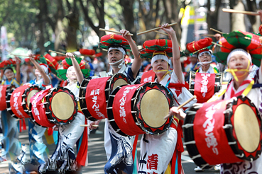
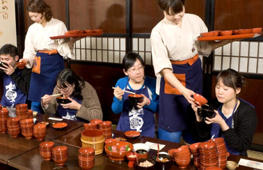

Morioka (盛岡) is the capital city of Iwate Prefecture, 2.5 hours by shinkansen north of Tokyo. Surrounded by mountains on three sides and blessed with multiple rivers, Morioka is an attractive city and a convenient transportation hub, but lacks a major sightseeing spot. The city is well known for its various styles of noodles, though, and does offer a handful of minor sites of interest.
Morioka Sansa Odori Festival, held from August 1 through 4, is one of the Five Great Festivals of Tohoku. Over 10,000 taiko drummers and dancers parade through the city; Sansa is listed in the Guinness Book of Records as the largest taiko drum festival in the world.
Eating Wanko Soba is an experience in itself. Each serving contains roughly a mouthful of soba noodles, and the server will constantly keep topping up your empty bowl with more noodles until you indicate that you have had enough.
